Tampa, Florida, USA
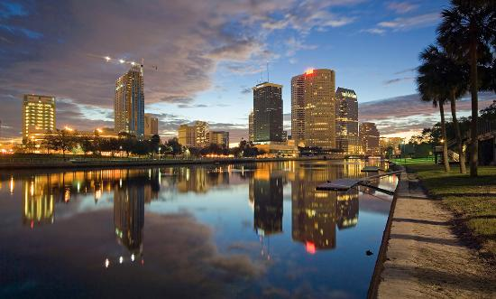
The conference will be held in the
Sam & Martha Gibbons Alumni Center on the USF campus in Tampa!
The following website has complete
information of Florida tourist attractions:
The
following website has complete information of Tampa Bay area tourist
attractions:
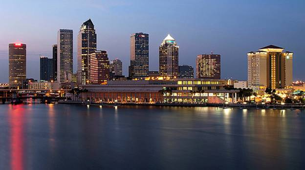
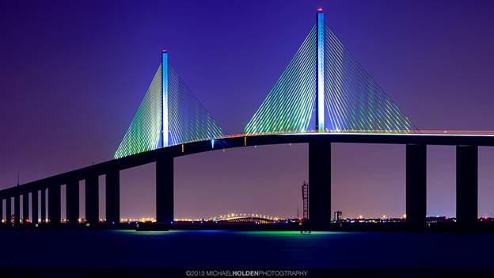
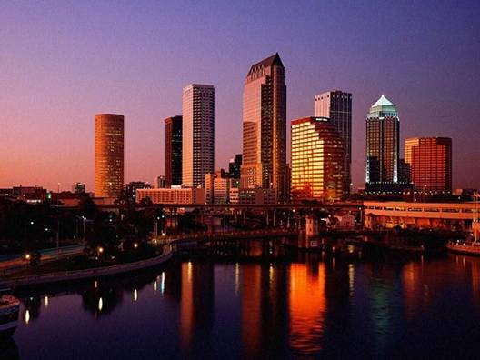
1.
Busch Gardens:
Combining thrill rides with
wonderful animal attractions, a day at Busch Gardens will delight
everyone in the family. Also known as "The Dark Continent," the
theme park is divided into nine different areas fashioned after
locations in Africa. Morocco, at the park entrance, features shops,
eateries and three theaters presenting great live shows. The Great
Ape Domain, a three-acre habitat of Lowland Gorillas and
chimpanzees, can be found in Nairobi. The largest collection of the
park's animals can be found on the Serengeti Plain, where over 800
animals roam in a natural habitat setting. The highlight of Egypt,
the newest section of Busch Gardens, is Montu, the southeast's
longest and tallest inverted roller coaster. Timbuktu offers roller
coasters and other midway rides, and Congo is host to Kumba, the
southeast's fastest steel roller coaster. Stanleyville features two
rides guaranteed to cool you off on a hot day; the Stanley Falls Log
Flume and the Tanganyika Tidal Wave. The Bird Gardens and Land of
the Dragons, an adventure play area for children, complete a tour of
Busch Gardens.
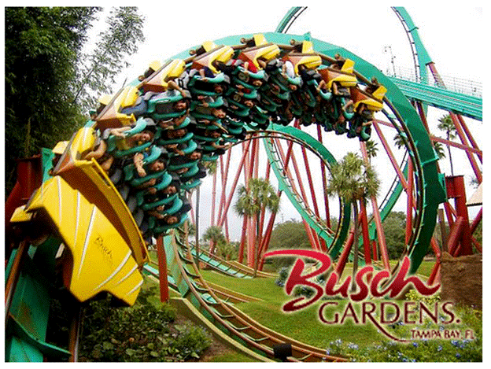
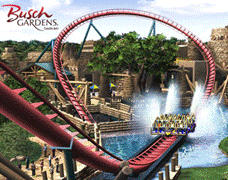
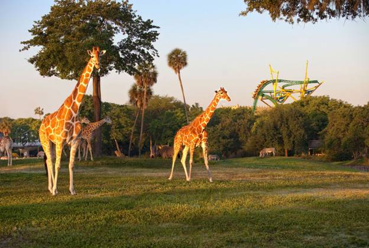
2.
Adventure Island:
Owned by Busch Gardens, this 25-acre waterpark offers loads of
twisting and turning slides and water attractions. Daredevils will
be thrilled by high speed rides such as The Water Moccasin, a
6-story-high twisting, extra wide water slide, and Tampa Typhoon, a
76-foot near free-fall drop. Splash Attack, a 12-level tree house
with more than 50 slides, water jets and rope climbs, guarantee
younger visitors will be entertained for hours. The whole family can
get into the fun at Paradise Lagoon, a giant swimming pool with
waterfalls, jumping platforms, cannonball slides, and translucent
water tubes!
.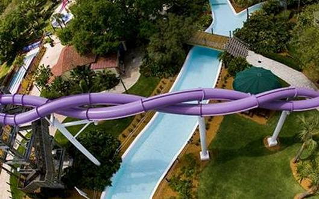
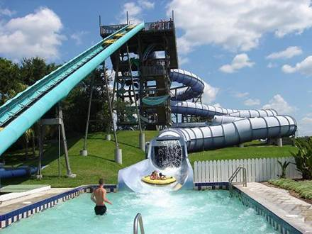
3.
The Florida Aquarium:
Come face to face with a
penguin, dive with sharks, swim with fishes, or take a Wild Dolphin
Ecotour out on to Tampa Bay during your visit.
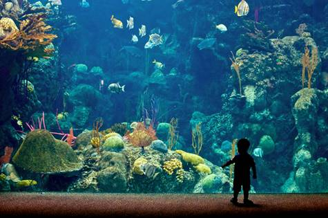
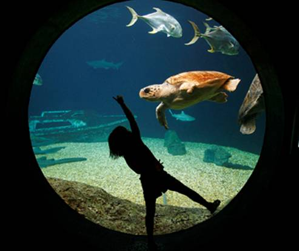
4.
Lowry Park Zoo:
Lowry Park Zoo has achieved some
major awards including the "Best family friendly zoo" in the country
and the “Best mid-sized zoo” in the U.S. This is a must see Tampa
attraction. What helps to make this zoo great is that the animals
are located in close proximity and the exhibits are not miles from
each other.
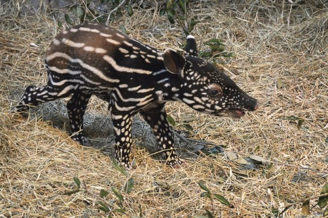
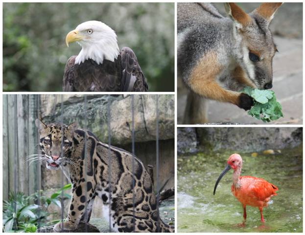
 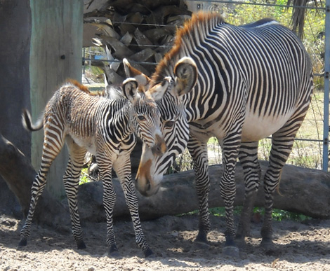
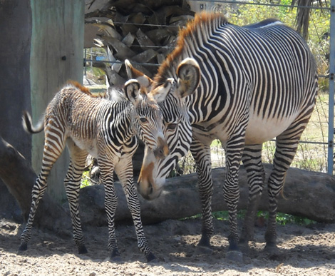
5.
Ybor City and State
Museum:
For many years the cigar industry was the only major manufacturing
concern in Tampa. Today, Ybor City is preserved as Ybor City State
Museum, and has become a major dining, shopping, and nightlife venue
in downtown Tampa.
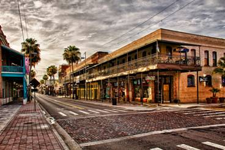
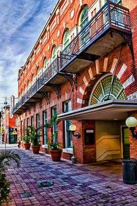
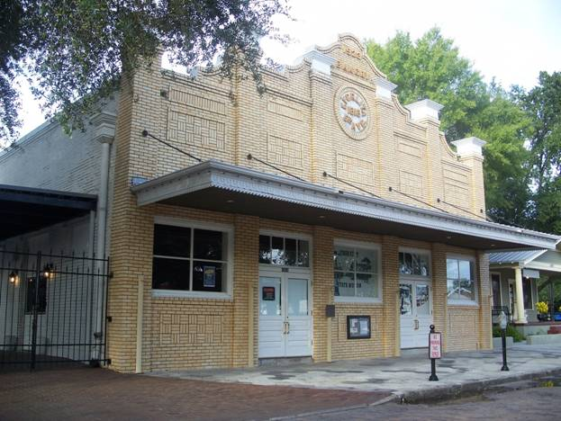
6.
Museum of Science and
Industry (MOSI):
MOSI is a major attraction in the area. It is considered the largest
science center in the southeast. In the museum are an IMAX Dome
Theatre and a children’s science center.
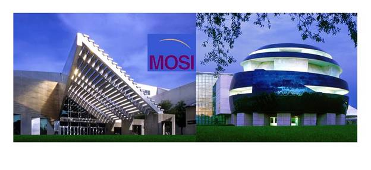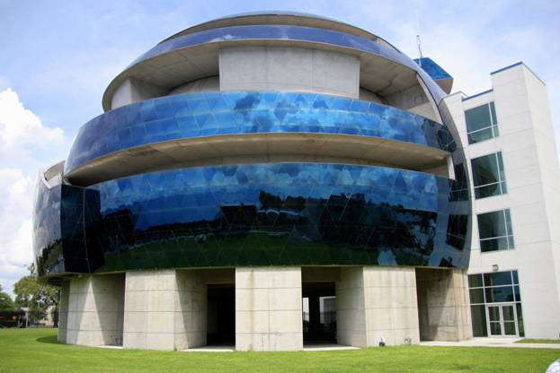
7.
Pier 60:
Pier 60 Park is beautiful - a crescent of fine, powdery white sand
that runs from the pass north for 1.3 miles. Shops, restaurants, a
bait shop, and beach concessions are located by the pier, which is
open 24 hours. Inspired by the nightly sunset-watching ritual in Key
West, a four-hour festival is held nightly from two hours before to
two hours after sundown. Jugglers, magicians, and a variety of
entertainers perform for the crowd that gathers each evening.
8.
Clearwater Marine Aquarium:
Meet Winter, the world’s most famous dolphin at the Clearwater
Marine Aquarium.
9.
Clearwater Beach:
Even with all the activities
Clearwater Beach has to offer, the best part of your trip might be
as simple as a stroll on the beach at sunset. Our award winning
beach has been voted among the “most beautiful beaches in the world”
by Conde Nast Traveler, USA Today, “Dr. Beach” and
FamilyTravelForum.com. It is also chosen as the “best place to watch
sunset” by USA TODAY.